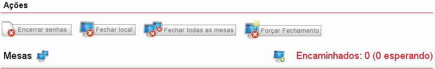
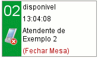
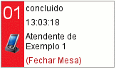
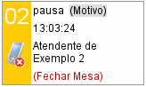

Apostila do Treinamento
Dúvidas mais freqüentes
-Como dar inicio a emissao das senhas?
No campo das "Ações" clique em "Abrir Local".
-Como abrir o local?
=> No campo "Ações" clique em "Abrir Local".
-Como Encerrar as senhas?
=> No campo "Ações" clique em "Encerrar Senhas".
-Como fechar o local?
=> Certifique-se de que não há nenhum atendimento em andamento. Em seguida, no campo "Ações" clique em "Fechar Todas as Mesas" e por último "Fechar Local". Caso algum problema ocorra, clique em "Forçar Fechamento".
-Como ver quantas senhas faltam ser atendidas?
=> Através do campo "Informações" do local, existe uma tabela que lista todas as senhas e quantas estão chamando.
-Como responder ao chat de um atendente?
=> Selecione o atendente ao qual deseja responder, em seguida, digite a mensagem e pressione em "Enviar" ou aperte a tecla ENTER.
-Como enviar avisos ao atendente?
=> Através do chat. Deve-se selecionar o atendente, digitar a mensagem e pressionar "Enviar" ou apertar a tecla ENTER.
-Como enviar aviso a todos os atendentes?
=> Existe uma opção TODOS dentro do selecionador que envia a mesma mensagem a todos os atendentes.
-Como ver quais atendentes estao atendendo?
=> As mesas que estão atendendo ficam na cor verde.
-Como ver quais atendentes estão ociosos?
=> Os atendentes que em mesas que estão ociosos, são mostrados na tela do gerente na cor vermelha.
-Como fechar uma mesa que foi desligada de forma incorreta?
=> Vá no quadro da mesa e clique em "Fechar Mesa". Caso a mesa esteja "Chamando" clique em "Devolver Senha". O estado da mesa passará para "Concluído" e você poderá clicar em "Fechar Mesa".
-Como ver o motivo da pausa do atendente?
=> O motivo pode ser visualizado na tela do gerente ao colocando o cursor do mouse na palavra “Motivo”.
-Como ver o servico interno sendo executado pelo atendente?
=> É possível visualizar o tipo de serviço que está sendo realizado colocando o cursor do mouse sobre a palavra “Serviço”.
-Como desabilitar um opiniometro?
=> No quadro que representa a mesa, clique no ícone do opiniômetro. Aparecerá uma mensagem de confirmação. Clique em "Ok".
-Eu posso passar a gerência para outra pessoa?
=> Sim, para isso basta clicar em "(Passar Gerência)". Surgirá um popup "Passar Gerência" e no campo "Mudar Gerente", aparecerão os nomes de todos os funcionários do local que estiverem aptos a se tornarem gerentes, ou seja, aqueles que não estiverem ligados a uma mesa. Localizando o nome do funcionário excolhido, clique na palavra "Associar" ao lado. Você será desconectado e no próximo login, entrará no sistema como Atendente.
Para maiores informações, continue a leitura deste Guia de Ajuda.
Conceitos
- 1. Local: Cada local tem um identificador único. As mesas e o atendente estão sempre associados a um local (físico) específico.
- 2. Gerente: O gerente de uma praça é um atendente a quem é atribuído o papel dentro de um intervalo de tempo determinado. Esse tempo pode ter o final em aberto, significando que ele é o gerente até que seja informada outra decisão.
- 3. Atendente: O atendente, no momento em que ele assume uma mesa para atendimento, tem um papel temporário naquele local, e pode ser assumido por outro atendente a qualquer momento.
- 4. Mesa: A mesa é a estação de atendimento onde o cidadão será recebido (atendido). Tem uma ligação física com o local, uma vez que o equipamento do “Opiniômetro” está associado àquele computador especificamente.
- 5. Expediente: Um expediente é o intervalo de tempo entre a abertura e o fechamento da praça. Durante um expediente as mesas podem ser abertas e fechadas de acordo com a necessidade, permitindo que, através do uso de turnos, uma mesma mesa possa ser usada por mais de um atendente.
- 6. Senhas: serão sempre seqüenciais dentro de um mesmo expediente, iniciando de 001 para cada categoria. No entanto, se houverem mais de 999 senhas emitidas para uma dada categoria dentro de um mesmo expediente, as senhas podem voltar a 001, sempre utilizando senhas de atendimentos já completamente encerradas e com horário apropriado e impresso.
- 7. Atendimento: Um atendimento começa no momento em que o cidadão solicita uma senha no “Emissor de Senha” e termina quando: o atendimento é concluído e o cidadão registra a avaliação do atendimento no opiniômetro, ou, o atendimento é concluído pelo gerente que encerra o atendimento porque o cidadão se recusou a registrar a avaliação ou quando o cidadão não reivindica o atendimento até 3 (senhas) após ser chamada.
- 8. Ausente: Este é o conceito que designa o momento em que uma senha é chamada, mas ninguém comparece para o atendimento. O sistema implementa uma tolerância de 3 senhas, o que significa que depois que a senha é chamada, o cidadão pode pedir para ser atendido “em atraso” até de 3 senhas.
- 9. Iniciar Serviço: Esta é a situação que descreve o momento em que o atendente precisa realizar alguma atividade “interna” extra SAC, que vai deixá-lo indisponível para novos atendimentos. O sistema permite que seja selecionado um serviço dentre uma lista previamente definida, assim como permite que sejam registradas informações referentes a esse serviço em específico.
- 10. Serviço em Atendimento: Da mesma forma que para o serviço interno, também é possível detalhar cada um dos serviços realizados ao longo de um atendimento. Essa informação é importante para possibilitar a extração de informações estatísticas sobre todo o processo de atendimento. Assim como no serviço “interno”, também é possível registrar informações adicionais, como por exemplo, a referência de um protocolo em um outro sistema.
Interface do Gerente
Assim como a interface do atendente, a interface do gerente também tem a tela dividida em áreas delimitadas, mas a interface do gerente é dividida em 4 áreas:
- 1.Resumo do Local: Esta área mostra algumas informações estatísticas básicas sobre o estado atual, com o número de pessoas esperando no total, e por categoria, a espera mais antiga, e de cada categoria com as médias de tempo de espera e de atendimento, também para cada categoria, e a média total.
- 2.Ações: Esta área mostra todas as ações que podem ser realizadas pelo gerente em um determinado momento. Assim como na tela do atendente, quando as ações tiverem consequências irreversíveis, será exibida uma caixa de confirmação para evitar acidentes.
- 3.Chat: A tela de chat do gerente permite falar individualmente com cada um dos atendentes ou com todos de uma só vez, selecionando o nome do atendente dentro de uma caixa de seleção.
- 4.Mesas: Mostra o estado atual das mesas e dos atendimentos em cada mesa, e o nome do atendente.
Descrição das ações do gerente

Abrir Local: o gerente inicia o expediente, iniciando a emissão de senhas e permitindo o acesso dos atendentes ao sistema.
Logo após a abertura do local, o bloco de ações ganha alguns botões. Fica assim:
Encerrar Senhas: encerra a emissão de senhas durante o expediente, no entanto não se fecha o local.
Fechar Local: encerra o expediente.
Fechar todas as mesas: fecha todas as mesas que não estiverem com atendimentos em andamento, desligando todos os atendentes de suas respectivas mesas.
Forçar fechamento: desliga todos os atendentes de suas respectivas mesas e fecha local. Esta deve ser a opção se ocorrer algum erro durante o “Fechar Local” ou “Fechar todas as mesas”.
O gerente pode também visualizar os encaminhamentos realizados durante o expediente através do link Encaminhados. Ao ser clicado, surge uma janela com as informações referentes aos encaminhamentos.
Descrição dos Estados das Mesas
As mesas, como já foi dito, podem assumir diversos estados. Em todos os casos, pode-se visualizar a identificação da mesa (01, 02, 03,...), a condição do opiniômetro (habilitado ou desabilitado), a hora em que essa mesa passou para esse estado e o estado atual. As cores de exibição também ajudam o gerente na melhor visualização do estado de cada mesa. Os estados são:
1.Fechado (cor cinza)

Não existe nenhum atendente ligado à mesa.
2.Disponível (cor verde)
Esse estado acontece quando o atendente está no sistema, podendo atender. Na tela, pode-se visualizar, o atendente que está ligado a essa mesa e a opção “Fechar Mesa”. O gerente pode optar por fechar a mesa se ele perceber que o atendente não se desligou do sistema no fim do expediente ou se ocorrer algum erro inesperado.
3.Chamando (cor verde)

Esse estado acontece quando é atribuído uma senha a uma mesa. Na tela, pode-se visualizar a senha que está sendo chamada, o atendente ligado à mesa e a opção “Devolver Senha”, que consiste em devolver a senha para a fila com prioridade máxima. O gerente opta por isso quando, por algum motivo, o atendente não puder realizar o atendimento.
4.Atendimento (cor verde)

Esse estado ocorre a partir do momento em que o atendimento é iniciado. É mostrado na tela a senha e o horário de início do atendimento, o atendente ligado à mesa e a opção “Encerrar”, que consiste em encerrar o atendimento quando, por algum motivo, o atendente não puder fazê-lo.
5.Avaliação (cor vermelha)

Esse estado começa quando o atendente encerra um atendimento e o cidadão inicia sua avaliação do atendimento. É mostrado na tela, a senha que está em avaliação o atendente ligado à mesa e a opção “Encerrar” que consiste em encerrar um atendimento se o cidadão se recusar a fazer a avaliação ou o opiniômetro estiver com defeito.
6.Concluído (cor vermelha)
Esse estado começa quando o atendimento e a avaliação foram finalizados ou quando uma senha é devolvida. É mostrado o atendente ligado à mesa e a opção “Fechar Mesa” que já foi explicada.
7.Pausa (cor amarela)
Esse estado ocorre quando o atendente inicia uma pausa. Nesse caso, ele pode dar um motivo para sua pausa. Este motivo é visualizado na tela do gerente ao por o mouse na palavra “Motivo”.
8.Interno (cor amarela)

Esse estado ocorre quando o atendente precisa realizar algum trabalho fora do Sistema de Atendimento. Na tela do gerente, é possível visualizar o tipo de serviço que está sendo realizado colocando o mouse sobre a palavra “Serviço”.